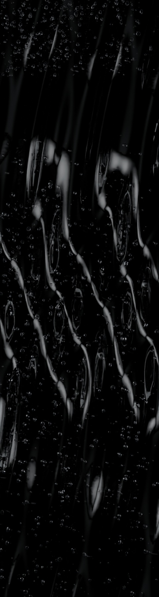
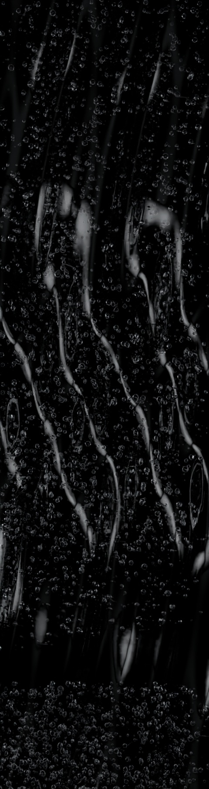

Water, lit
by its edges.
Clear folds. Dark depth. Uneven pockets of air. One water material, two bubble treatments.
Colourless water · IOR 1.333Original geometric study.
These are rendered stills of a mathematical folded sheet. They demonstrate the materials and bubbles; they are not frames from a fluid simulation.


Arrival once. Then repeat.
Playback mapping · stills stay fixed.